Interdisciplinarité à la HEIG-VD autour de la géoinformation
Thématiques
- Acquisition de géodonnées
- IA et machine learning
- Sciences citoyennes
- Géodésie
- Géovisualisation
- Développement géo-soft, webmapping
- Gestion de géodonnées / standardisation (OGR)
Personnes de contacts
- Jens Ingensand (Professeur Géoinformatique et SIG, Responsable du groupe thématique de compétence Géomatique)
- Yves Deillon (Professeur Mensuration officielle)
- Sébastien Guillaume (Professeur Géodésie, méthodes d'estimation et navigation)
- Bertrand Cannelle (Professeur BIM et géovisualisation, Responsable de la filière Génie territorial)
- Adrien Gressin (Professeur Photogrammétrie et télédétection)
- Olivier Ertz (Professeur Géoinformatique)
- Bertil Chapuis (Professeur, Responsable du groupe thématique de compétence Informatique logicielle)
Géovisualisation
Développement VR pour Swiss-Ski & Sunrise
BiodivAR
Education à la biodiversité grâce à la réalité augmentée géolocalisée
Créer, partager et visualiser des points d’intérêt sur la biodiversité pour explorer la nature au moyen d’une application mobile de réalité augmentée. C’est le défi relevé par le projet BiodivAR, suite du projet BioSentiers.
Screencast
En savoir plus
↗ Biodiversité et réalité augmentée: un avenir de l’apprentissage?
Smapshot
La machine à remonter le temps participative
Grâce à Smapshot, il est possible de géolocaliser des images d’archive en 3D.
Plus de 250'000 images ont déjà été référencées, grâce aux contributions de plus de 1'000 volontaires.
Screencast
Smapshot Story Maps
Distinctions
🏆 Prix DINAcon "Open Data" 2021
En savoir plus
Maquettes pédagogiques


Réalisation de différentes maquettes pédagogiques, comme le Bac à sable pédagogique permettant de visualiser aussi bien les courbes de niveaux, les remblais/déblais, ou encore les techniques d’estompage pour visualiser le relief, tout cela en temps réel !
Acquisition de géodonnées
GNSS / INS Navigation pour Armasuisse
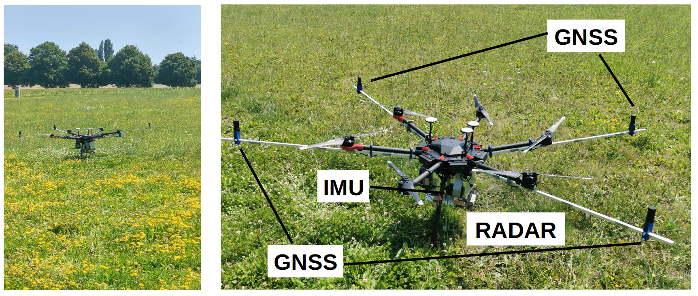Multidigitalis - SwissCollNet
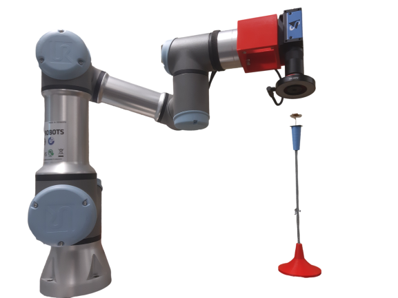 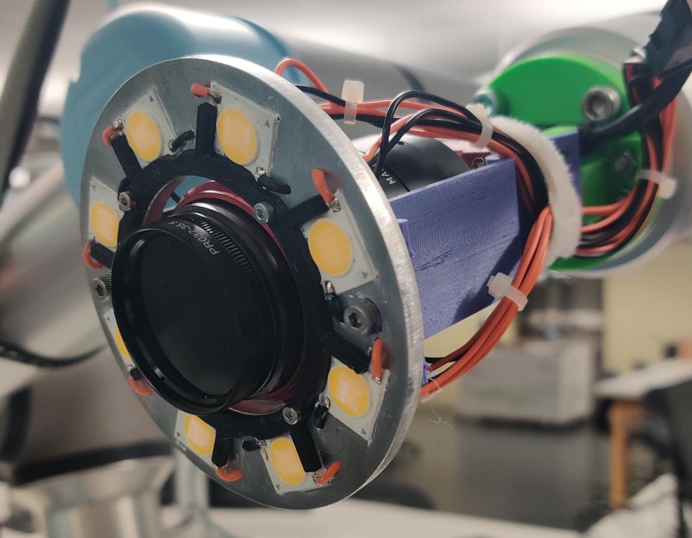- En collaboration avec insit, iAi (HEIG-VD), HE-ARC et 4 musées d'histoires naturelles
- Bras robotisé, Schéma d'acquisition adaptatif, Traitement et contrôle qualité temps réel
- Acquisition multi-spécimens, Mesures multi-stereo, Multi-spectral, Collection en fluides
Multidigitalis - SwissCollNet
En savoir plus↗ https://swisscollnet.scnat.ch/fr/running_projects/multidisciplinary_projects
Sciences citoyennes
Sciences citoyennes et IA

Les sciences citoyennes permettent aux citoyens de collecter des larges quantités de données. A l'aide d'intélligence artificielle des processus de validation automatique des données collectés in situ ont été implémentés et analysés. L'utilisation de la validation automatique permet également d'encourager les citoyens à collecter des informations.
modos
Participation citoyenne pour la mobilité douce des seniors
Le projet modos propose un framework de participation citoyenne pour la cartographie et la documentation des obstacles à la mobilité piétonne dans les villes.
L’objectif final est la mise à disposition d’un moteur de calcul d’itinéraires adaptés au profil de mobilité des utilisateurs-trices, en plus de mettre en évidence les zones de faible marchabilité à destination des pouvoirs publics.
Screencast
Distinctions
🏆 Label "Qualité de vie" 2021 - Fondation Dalle Molle
En savoir plus
IA et machine learning
MPD – cadastre pour Lausanne
Projet de mise à jour du cadastre de Lausanne, par utilisation d'images obliques : résultat de la classification automatique 3D sur la zone d'étude (Lausanne sous-gare). Étude réalisée pour le canton de Vaud, avec la collaboration de la ville de Lausanne.
Mapping Fribourg in a day
| 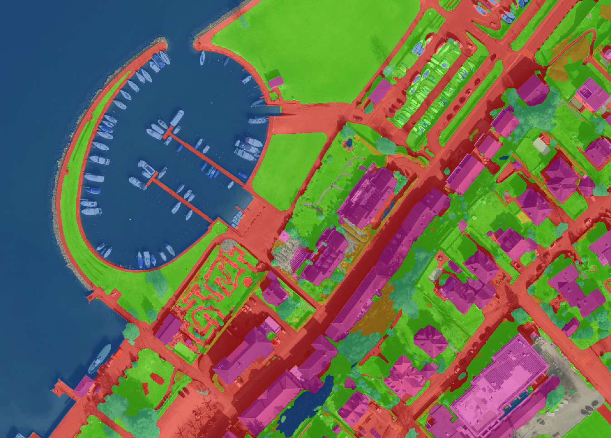 |
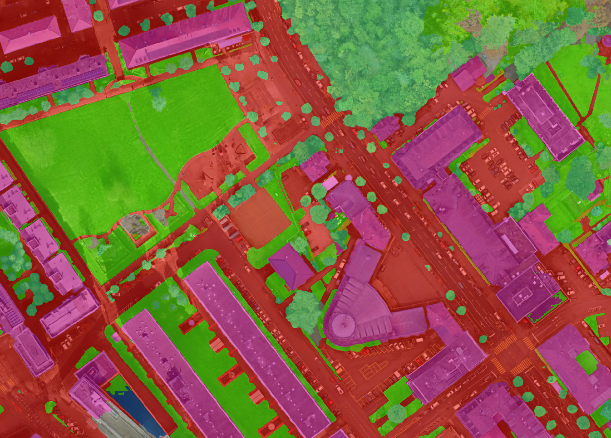 |
Après avoir participé au challenge IGN Flair #1, nous avons appliqué notre modèle d'IA (classification en 12 classes) sur les orthoimages de Morat-Fribourg et Fribourg. Ces résultats ouvrent de nouvelles possibilités pour des applications de cartographie rapide.
Mapping Fribourg in a day
En savoir plus↗https://rar-indg.heig-vd.ch/map/
Sécurisation des courses cyclistes
Projet de détection automatique d'obstacles le long des parcours des courses cyclistes en vue de leurs sécurisations. Réalisation d'un prototype de système d'acquisition stéréoscopique, géoréférencement des images et extraction sémantiques 3D automatiques.
Géodésie
Swiss height system
La HEIG-VD collabore étroitement avec swisstopo pour la définition du nouveau système altimétrique de la Suisse (altitude normale) qui sera compatible avec les systèmes supérieures globaux et intégrera la cinématique.
Swiss height system
En savoir plus↗ https://swiss-height-system.heig-vd.ch
Détermination du géoide pour le Future Circular Collider (FCC)
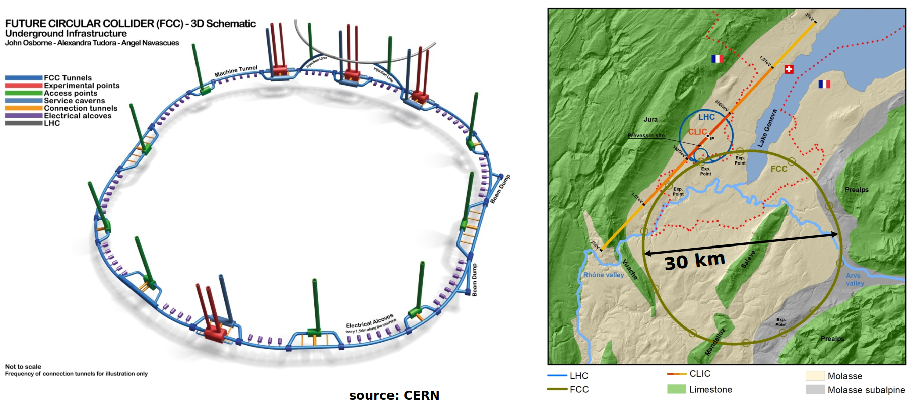Profil astro-gravimétrique de précision
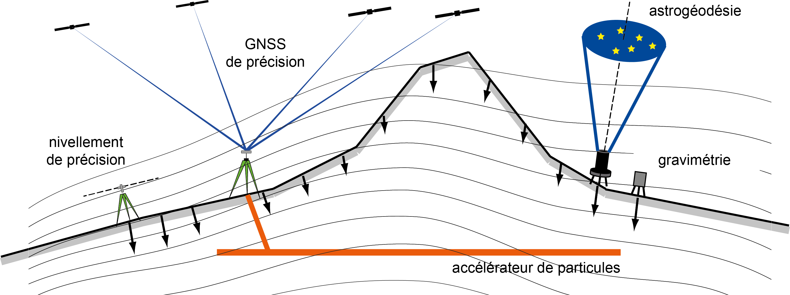Contributions HEIG-VD
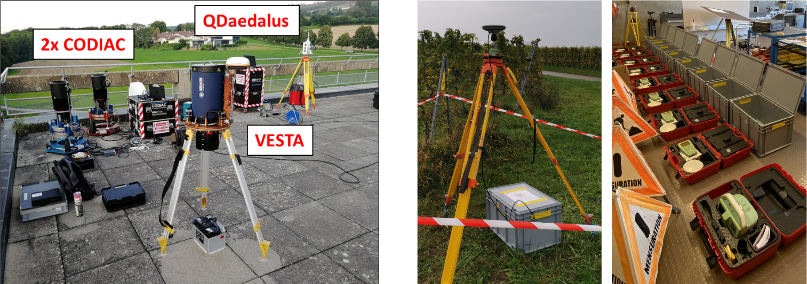
source: Dr. Daniel Willi swisstopo
Développement et comparaisons internationales d’instruments astrogéodésiques
Campagne de mesure GNSS / Nivellement de précision du profil astro-gravimétrique
Résultats préliminaires => Profil de quasi géoïde σ = 5 [mm]
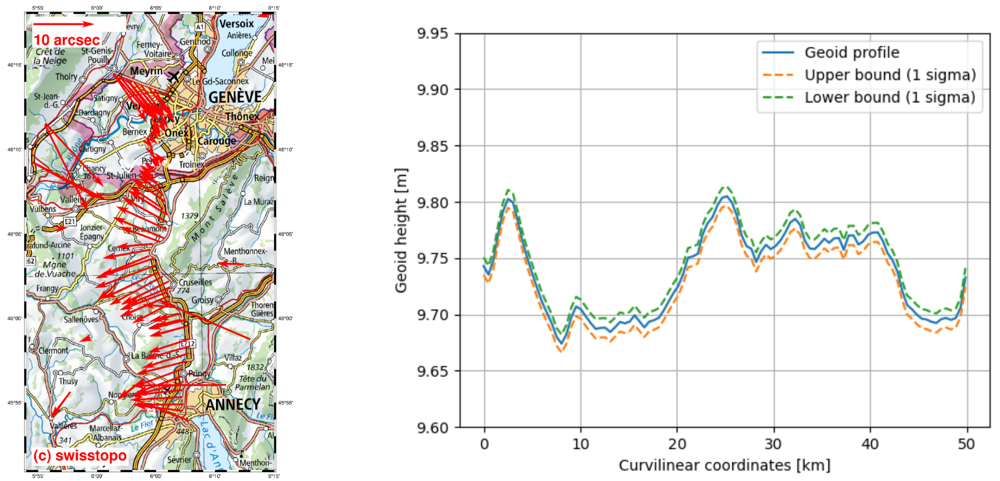 source: Dr. Daniel Willi swisstopoDéveloppements de logiciels géodésiques
Développement géo-soft
Geocity MapUI
Webmap components and UI design pour Geocity
Solution d'interaction cartographique avancée et modulable
Screenshots
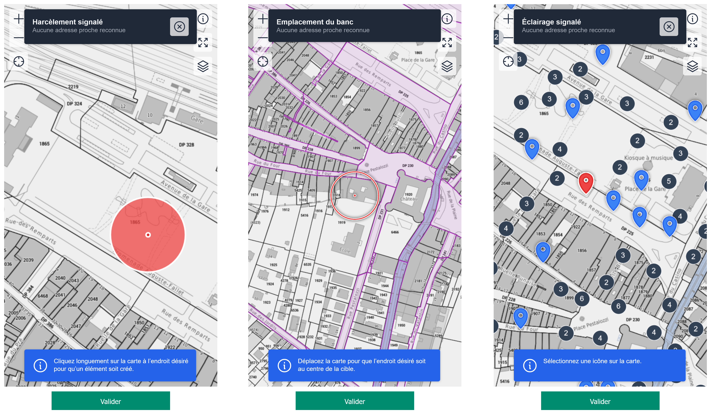En savoir plus
Traitement des observations et contraintes géométriques par les moindres carrés
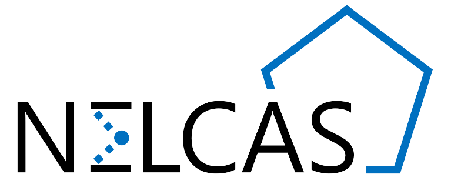La HEIG-VD développe une plateforme logiciel NELCAS simple et modulaire pour le traitement des observations et contraintes géométriques selon les moindres carrés. Elle est adaptée aussi bien pour des mensurations techniques que pour des mensurations officielles et dispose d’outils d’analyse modernes et efficaces.
Positionnement d'objets non-collaboratifs par tracking vidéo théodolite
FlyG2 : Photogrammétrie en temps réel
- Choix de la meilleure configuration de drone sur données simulées
- Algorithme de traitement de données photogrammétriques en quasi-temps réel
- Architecture de calcul edge/cloud
Gestion de géodonnées et standardisation
Symcore
Standard international pour la représentation de données géographiques
L’interopérabilité des représentations cartographiques est un enjeu majeur à l'Open Geospatial Consortium (OGC). C'est une collaboration de longue date entre le MEI et le Lab-STICC (CNRS) qui a permis de faire émerger la spécification socle SymCore comme nouveau standard international de représentation de données géographiques, approuvé en 2020 par l’OGC.
Aujourd'hui, les chercheurs du MEI participent à l'élaboration de la version 2.0 de ce standard au sein du SWG Styles & Symbology de l'OGC.
En savoir plus
↗ OGC Symbology Conceptual Model: Core Part
↗ OGC Symbology Conceptual Model: Core Part (V2.0)
eCH-0056 v4: Profil d’application de géoservices
Accompagnement de la révision de la norme eCH-0056
En savoir plus
Osires
Open geospatial standards and reproducible research
Définition de bonnes pratiques d'interopérabilité pour des services ouverts favorisant la reproducibilité de la recherche avec des données spatio-temporelles
En savoir plus
FGDM4GS
Dénormalisation de MGDM pour la publication de géoservices
Optimisation des modèles de géodonnées minimaux pour la publication de géoservices.
Comparaison des possibilités de représentation cartographique INTERLIS2 avec SymCore.
En savoir plus
↗ INTERLIS 2 Manuel de référence
↗ INTERLIS 2 Grafikmodellierung und Anforderungen der Kartografie
Standardisation d’observations de géoinformation
La HEIG-VD propose une standardisation des formats des observations afin de faciliter leurs contrôles sémantiques et géométriques, assurer un archivage efficace et durable, favoriser la promotion du codéveloppement et de l'intelligence collective et permettre le renversement de la relation entre client et fournisseur de solutions informatiques, dans le sens où le client ne serait plus forcément dépendant de formats propriétaires. Cette normalisation permet donc d’augmenter l’efficience des travaux géomatiques.
Etude sur les processus de qualification des géodonnées et standardisation
Depuis longtemps la HEIG-VD est active dans les processus de géo-standardisation (OGC, eCH, SOGI). Une étude pour le canton de Genève est en cours pour analyser les processus organisationnels et techniques de qualification des géodonnées du canton de Genève. Le but de l'étude est de proposer une approche systématique qui tienne compte des bases légales, des normes actuelles et des règles de qualité nécessaires aux utilisateurs.